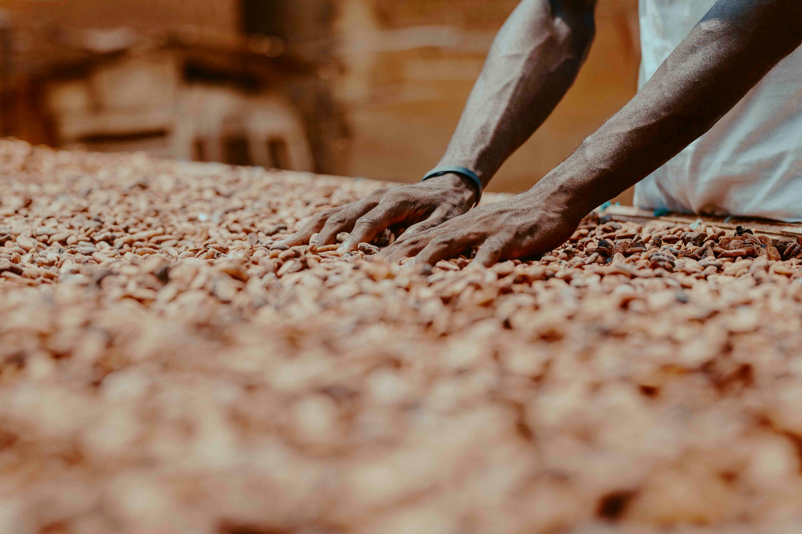

Farmers gain the knowledge, planting material and extension needed to manage cocoa well.
Cocoa adds a long-term income pathway alongside food crops and other enterprises.
Farmers sell through organized aggregation with clearer quality and transaction records.
Documented production and payments can help farmers build a stronger commercial history.
Plots are mapped, land safeguards are applied and farm practices protect people, soil and water.
Parish groups, nurseries and field teams create capacity that can support responsible expansion.
Bulimi's first phase is designed to support 100 farmers to establish at least one acre of cocoa each in Kyenjojo. Farmer onboarding and preparation are planned for the last quarter of 2026, with the first major planting window targeted for March–April 2027.
Farmer and plot registration, training attendance, seedling nursery and distribution records, field-visit logs, survival counts, input deliveries, quality records, cocoa purchases, farmer payments and buyer transactions will form the core evidence base.
Public reporting will state the reporting period and distinguish outputs from outcomes. Targets are labelled as targets; achievements will have a source and reporting date.